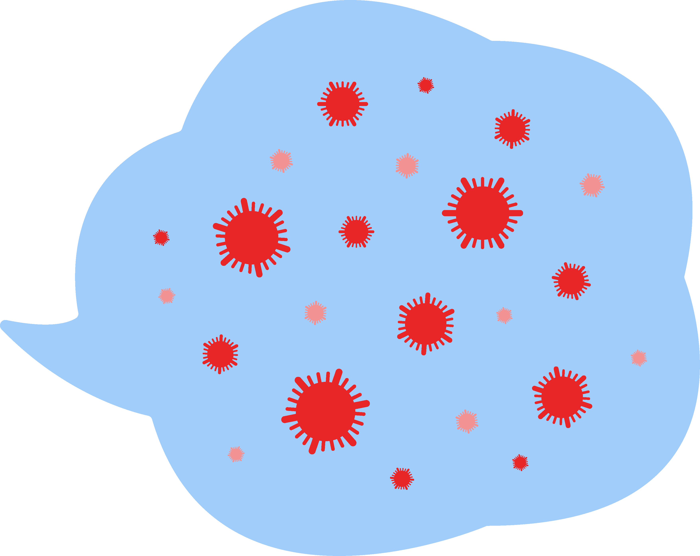
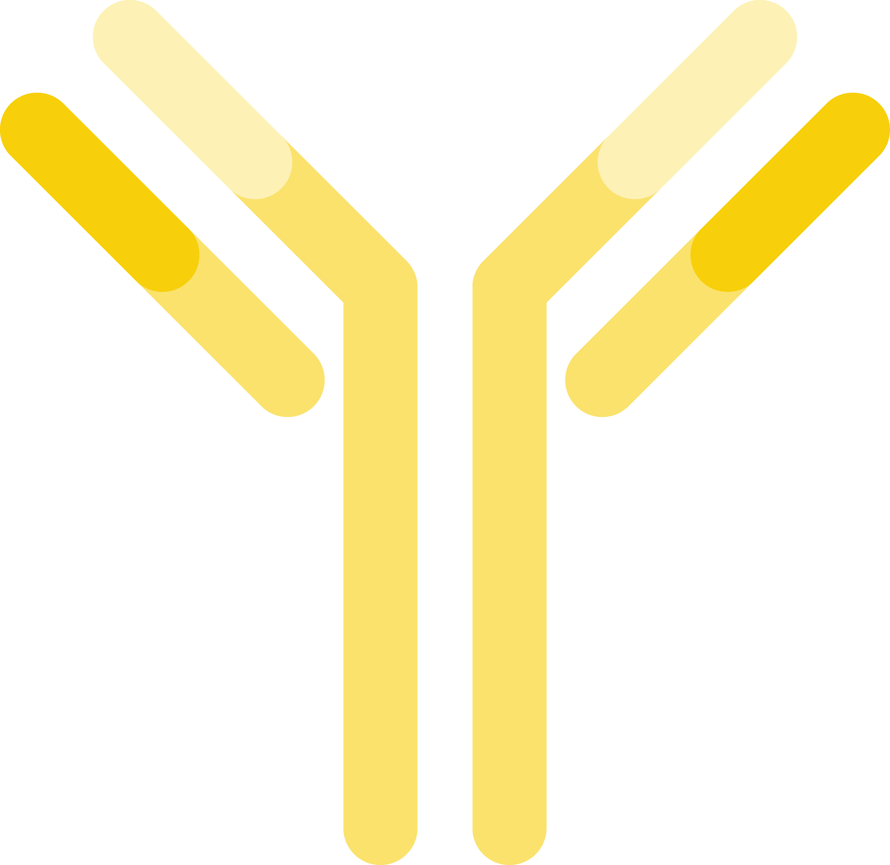
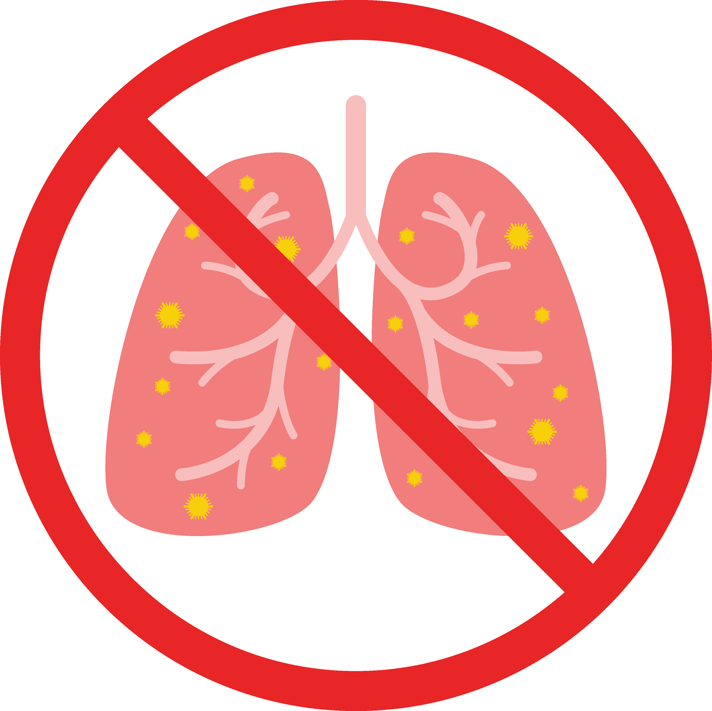
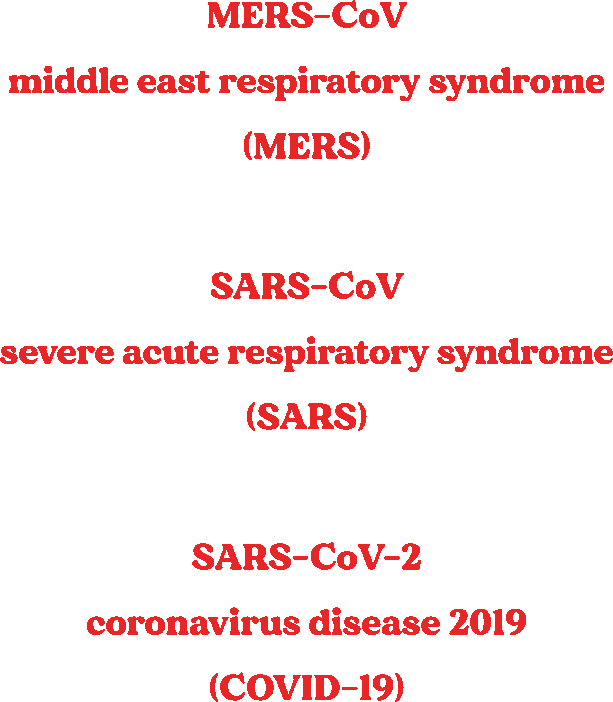
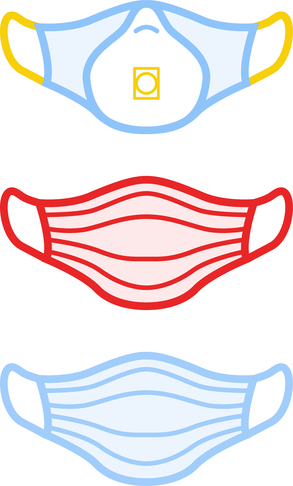
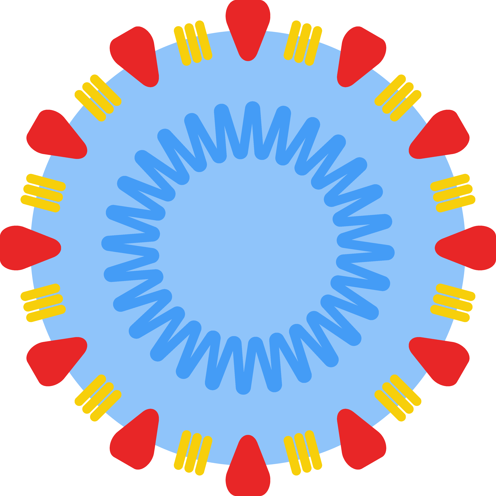
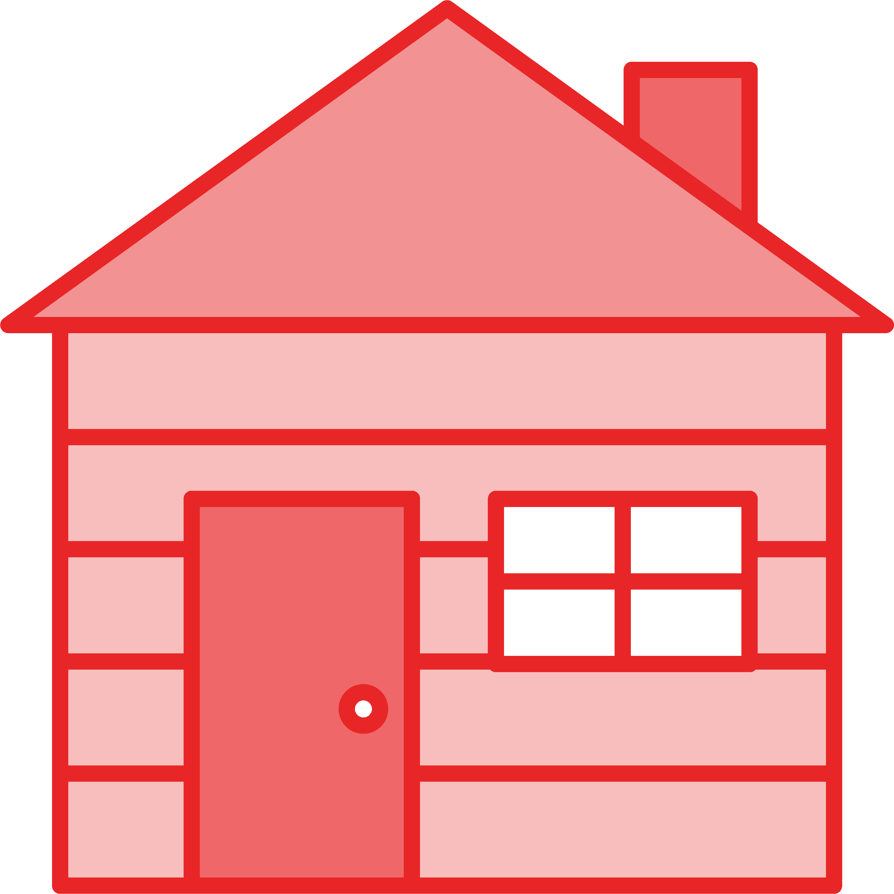
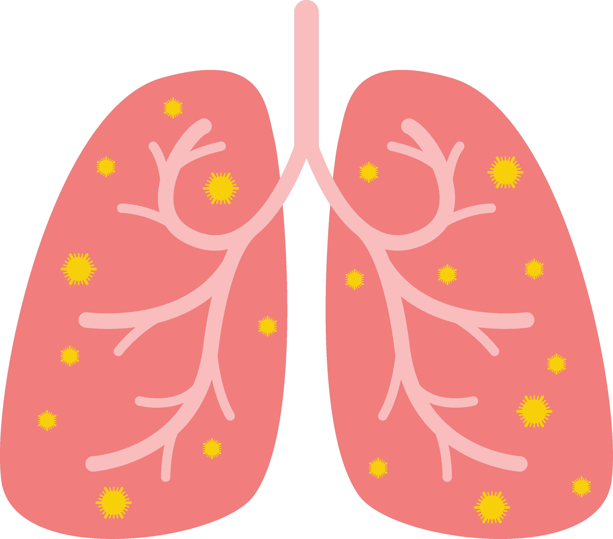
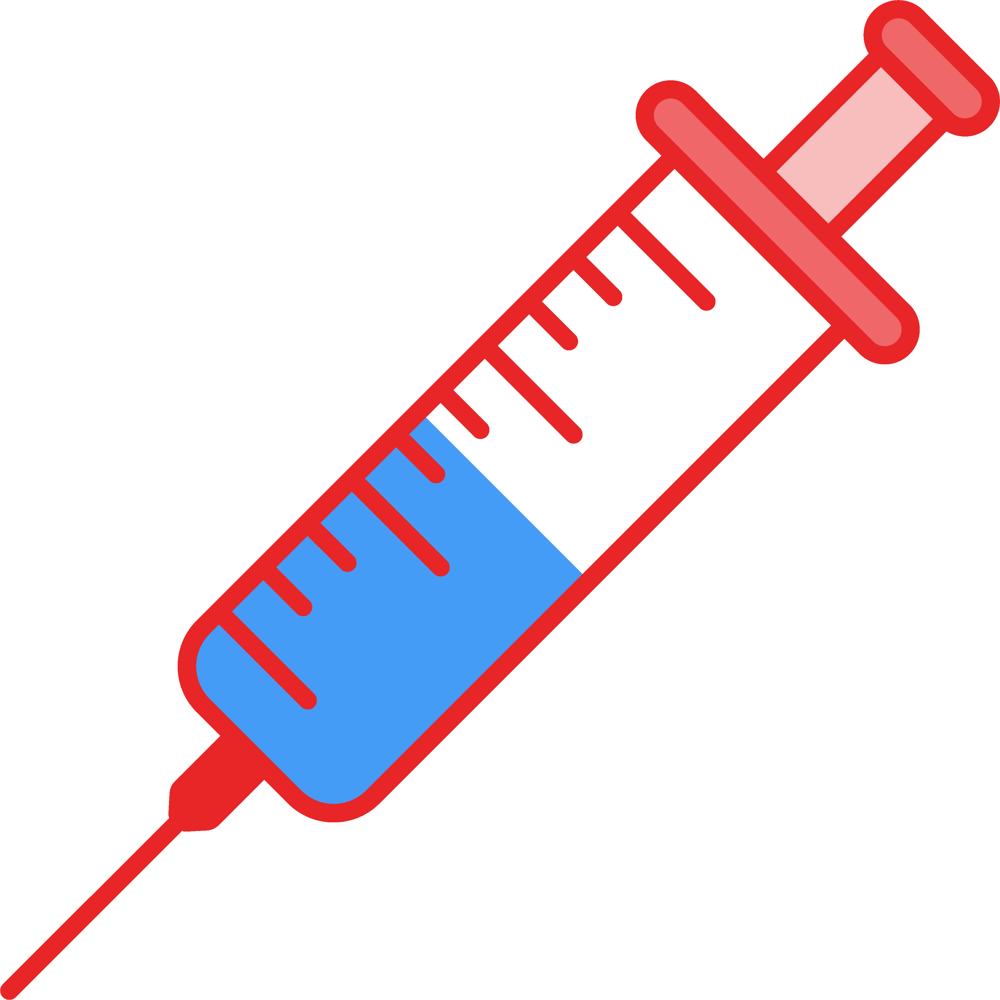
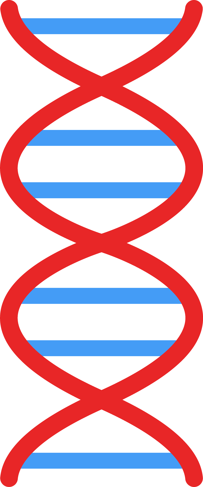

covid 19
glossary
glossary
airborne
Airborne refers to transmission that can occur from infected air. This can happen when tiny infectious droplets that have been released by an infected person hangs in the air for a long period of time.
An example of this is when an infected person coughs and doesn’t cover their mouth properly, droplets containing COVID-19 can hang in the air and expose someone nearby, to the virus. The virus can linger after the initial infected person is gone, which is why it is important to wear a mask.

antibody
An antibody, or immunoglobulin, is a Y-shaped blood protein that the body’s immune system produces to defeat a specific antigen. Antibodies are made to keep our bodies healthy from illness.
Antigens are a toxin or something that the body identifies as alien. Antigens include bacteria, viruses and other foreign substances in the blood.
Antigens are a toxin or something that the body identifies as alien. Antigens include bacteria, viruses and other foreign substances in the blood.

asymptomatic
Being asymptomatic is when a person who is infected with COVID-19 does not show or develop symptoms.
An asymptomatic person can still infect other people. So even if a person doesn’t seem like they’re infected, it does not mean they are not.
An asymptomatic person can still infect other people. So even if a person doesn’t seem like they’re infected, it does not mean they are not.

case fatality rate
The case fatality rate (CFR) is the amount of deaths compared to the total number of people diagnosed. This calculation is often presented as a percentage.
This number is often used as a way of measuring how severe a disease may be, but it should not be the only indication of the severity of a disease.
This number is often used as a way of measuring how severe a disease may be, but it should not be the only indication of the severity of a disease.

clinical trial
A clinical trial is an experiment or observation done as part of clinical research. This research studies new tests and treatments and evaluates their effects on human health. This research is conducted on volunteers to test medical research. These trials are very carefully done and have to be approved before they can even start. In biomedical clinical trials, there are 4 phases: Phase 1 usually tests a new drug for the first time in a small group to decide a safe amount and to see if there are any side effects. Phase 2 tests for the same thing as Phase 1 but in a larger group of people. Phase 3 is tested on larger groups from different areas and countries, if this trial goes well, the drug will likely be approved. Phase 4 happens after a drug has been approved for further testing in a larger group over a longer period of time.

close contact
A close contact means having face-to-face contact for more than 15 minutes with someone who has been diagnosed with COVID-19 or sharing a closed space with them for more than two hours. This may include someone in your home, someone you work with, someone you shared transport with or even being in direct contact with body fluids or laboratory specimens of an infected person.

community transmission
Community transmission means members of the community are infected and infecting others that haven’t been diagnosed and health professionals aren’t aware of. Which is why public health measures such as physical distancing or masks are so important.
confirmed case
A confirmed case refers to someone who has been diagnosed with COVID-19.

contact tracing
Contact tracing is a public health measure used to identify the scope and origin of an outbreak of confirmed cases. This measure is the process of identifying people that a confirmed case may have come into contact with while they were infectious.

coronavirus
Coronavirus is a group of many diseases, similar to herpes diseases where there are many different names for the same family of diseases. The coronavirus that caused the COVID-19 outbreak is SARS-CoV-2.

COVID-19
COVID-19 is an acronym that refers to the SARS-CoV-2 pandemic in 2019.
CO is short for corona, the disease group that caused the pandemic, VI is short for virus, D for disease and 2019 indicates the year it began.
A lot of time was spent deciding the name for this pandemic at it was particularly important that the widespread name for the disease was not discriminatory or offensive to any group or people. Other names that refer to COVID-19 may be offensive or even racist, so it is good to refer to the disease that caused the pandemic as COVID-19.
CO is short for corona, the disease group that caused the pandemic, VI is short for virus, D for disease and 2019 indicates the year it began.
A lot of time was spent deciding the name for this pandemic at it was particularly important that the widespread name for the disease was not discriminatory or offensive to any group or people. Other names that refer to COVID-19 may be offensive or even racist, so it is good to refer to the disease that caused the pandemic as COVID-19.

herd immunity
Herd immunity is when populations are indirectly protected from disease either through vaccination or the body developing immunity through its immune response.

lockdown
A lockdown restricts the movement of a community as a non-medicinal public health measure to slow the spread of an infectious disease. “Stay at home” is a common phrase to hear when discussing a lockdown. There is more than one type of lockdown and they have varying degrees of effectivity.
mask
A face mask is a type of non-medicinal public health measure to slow the spread of infectious disease. For full efficacy, masks should be worn taught and cover the mouth and nose.
Not all masks are the same and hence cannot offer the same amount of protection.
A face shield does not provide the same kind of protection as a face mask and should not act as replacement, unless a face mask cannot be worn. There are many different types of face masks but a face mask with 3 layers is recommended.
Not all masks are the same and hence cannot offer the same amount of protection.
A face shield does not provide the same kind of protection as a face mask and should not act as replacement, unless a face mask cannot be worn. There are many different types of face masks but a face mask with 3 layers is recommended.

outbreak
An outbreak is the sudden increase of confirmed cases in a specific time and place.
pandemic
A pandemic is the global spread of an infectious disease. A pandemic cannot be defined by one particular number of cases or countries, but is rather used to describe the severity of an outbreak.
physical distancing
Physical distancing, or social distancing, is a non-medicinal public health measure that slows the spread of infectious disease.
The recommendation for COVID-19 is to keep 1.5 meters away from others.
The recommendation for COVID-19 is to keep 1.5 meters away from others.

quarantine
A quarantine restricts the movement of people or certain people as a non-medicinal public health measure that slows the spread of infectious disease. There are many different models for quarantine, some stricter than others.
r-naught (R0)
R-naught or reproductive rate, is the indication of how contagious a disease is. The r-naught number is an indication of how many people an infected person will go on to infect.
This is represented by a number R0 and importantly, it is not a fixed number. This number is influenced by many factors, including human behavior. When there is a significant increase in cases, this number is likely to change as well.
This is represented by a number R0 and importantly, it is not a fixed number. This number is influenced by many factors, including human behavior. When there is a significant increase in cases, this number is likely to change as well.
SARS-CoV-2
SARS-CoV-2 is an acronym which means Severe Acute Respiratory Syndrome Coronavirus 2. It is the strain of virus that caused the COVID-19 pandemic.

self-isolation
Self-isolation is when an individual stays apart from others including those they live with, in order to prevent the infection of other people. It is different to quarantine.

symptomatic
When an individual is symptomatic, this means they are showing signs of sickness.
For COVID-19, common symptoms can include fever, dry cough and tiredness. There are many other symptoms that may occur when infected with COVID-19, so if you feel sick, get tested immediately and stay home. If you experience difficulty breathing or shortness of breath, chest pain or pressure or loss of speech or movement, you should seek medical care immediately.
For COVID-19, common symptoms can include fever, dry cough and tiredness. There are many other symptoms that may occur when infected with COVID-19, so if you feel sick, get tested immediately and stay home. If you experience difficulty breathing or shortness of breath, chest pain or pressure or loss of speech or movement, you should seek medical care immediately.

vaccine
A vaccine is a medicinal public health measure to slow or stop the spread of an infectious disease. There are many different types of vaccines including, live-attenuated, inactivated, polysaccharide or conjugate and toxoid.
There can be more than one type of vaccine developed for the same disease.

viral shedding
Viral shedding can occur when a virus replicates its cells inside your body and is released outside of your body. These cells may be contagious. For COVID-19, viral shedding is at its peak when symptoms are at their worst but shedding can continue long after symptoms have gone.

virus
A virus is an infective agent that is able to multiply within the living cells of a host.
Many viruses have defenses of their own so that our immune systems may find it difficult to defend them.

world health organisation
The World Health Organisation is an agency part of the United Nations, responsible for public health. The overall goal of the agency is to achieve the highest possible level of health.
zoonotic
A zoonotic disease occurs when germs are spread from animals to people. Those germs may be carrying an infectious disease from that animal species which is then transferred to humans. There are many animals that can spread diseases including rats, bats and mosquitoes. An example of this spread occurring is when a bat bites a human.